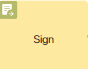
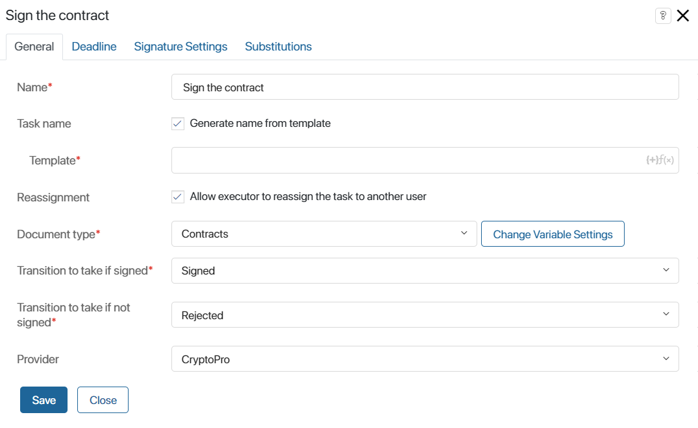
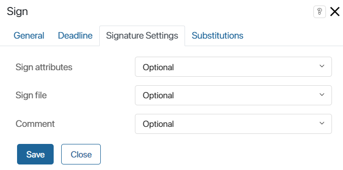
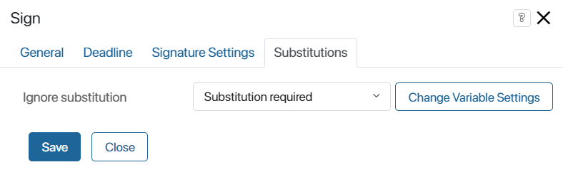
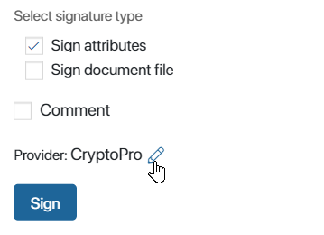
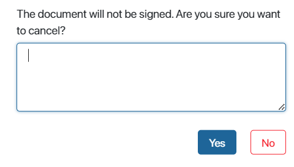

The Sign graphical element is used in business processes to assign a user a task to sign an app item, such as a contract or a loan application.
Note: Signing requires a digital signature certificate from one of the providers available in the system installed on the user‘s computer.
Before configuring signing in the business process, enable the provider modules whose certificates employees will use. You can utilize both standard and custom modules.
Read more about configuring digital signatures in apps in the Set up digital signatures article.
Set up the Sign activity
On the process page, in the toolbar to the right of the modeling box, open the System Elements tab. Drag the Sign activity onto the diagram and place it wherever the process requires the app item to be sent for signing.
For example, you can configure the Contract Handling process, during which the document is first agreed upon and then signed. Then the Sign activity should be placed after all the approval steps.
Please note, that the Sign activity requires at least two transitions. One transition is necessary for signing, the second one is for rejecting the signature.
To open the window with settings, double-click on the added activity.
General tab

- Name*. Enter the name of the task that will be displayed on the process diagram.
- Task name. Enable the Generate name from template option to add context variables to the name that the executor will see in the task list and on the task page.
- Template*. Click the {+} icon in the right corner of the field and select a variable. You can also add conditions and functions as you would for a template item name. This will generate a more informative name.
If this option is not used, the text specified in the Name* field will be displayed in the task list and on the form.
- Reassignment. Enable this option to allow the executor to reassign the task of signing a document to another employee.
- Document type*. Select the variable where the app item to be signed will be stored during the process.
- Transition to take if signed*. Select from the list the transition the process will follow if the document is signed.
- Transition to take if not signed*. Select the transition the process will follow if the signature is rejected.
- Provider. Select from the list the provider whose certificate will be used by default for signing the document.
Deadline tab
This tab is a standard setting in the activity of the Task type. It is used to set deadlines for task execution, as well as to define employees who will be notified if the specified deadlines are exceeded.
To learn more about setting this tab, see the Task article.
Signature Settings tab

- Sign attributes. Set whether the attributes of the app item must be signed.
- Do not use. When signing the app item, attributes will not be signed.
- Optional. The user can define the type of signing: with or without attributes. By default, attribute signing is disabled. To enable it, the Attributes option must be checked in the item signing window.
- Preferred. The user will be able to define the method of signing. By default, attribute signing is enabled. In the signing window, the user will be able to turn off the Attributes option.
- Required. When signing the app item, the user will automatically sign the attributes.
- Sign file. For Document type app the option of file signing is additionally available. The settings in this field are similar to those of the Sign attributes field.
- Comment. Configure the option to leave a comment on the signature. Select an option from the list: Do not use, Optional, Preferred, or Required.
Substitutions tab
On this tab, you can specify a variable that controls the reassignment of the signing task to an employee who replaces the primary executor.

In the Ignore substitution field, specify a variable from the business process context of the Yes/No switch type.
If the variable is set to Yes, the signing task will be assigned to the initially specified executor, and if it is set to No, it will be assigned to the substitute employee. The value of the variable can be changed during the business process, for example, by placing the variable on the form of another task, or by using scripts.
For example, you can ignore substitution if the document sent for signing contains confidential data that should not be disclosed to third parties.
To complete the settings, click Save.
Work with the Sign task
When the published process is launched, at a certain step the user will be presented with the Sign document task. The task looks like a view page of this document with additional buttons Sign and Reject.
When the Sign button is pressed, a window for selecting a certificate will open. The user will be able to change the default provider by clicking on the pencil icon. It is also possible to enable the signing of attributes or a document file, and leave a comment. The list of options depends on the settings specified in the Sign element of the process diagram.

After signing, you can see this status on the document page. Besides, on the sidebar of such item, users can view the archive of electronic signatures and download their files.
If the user clicks Reject, a window will open with a confirmation of the action and a field for entering a comment. A rejection notification will be sent to the task author’s and executor’s activity streams, where the entered comment will be displayed.
